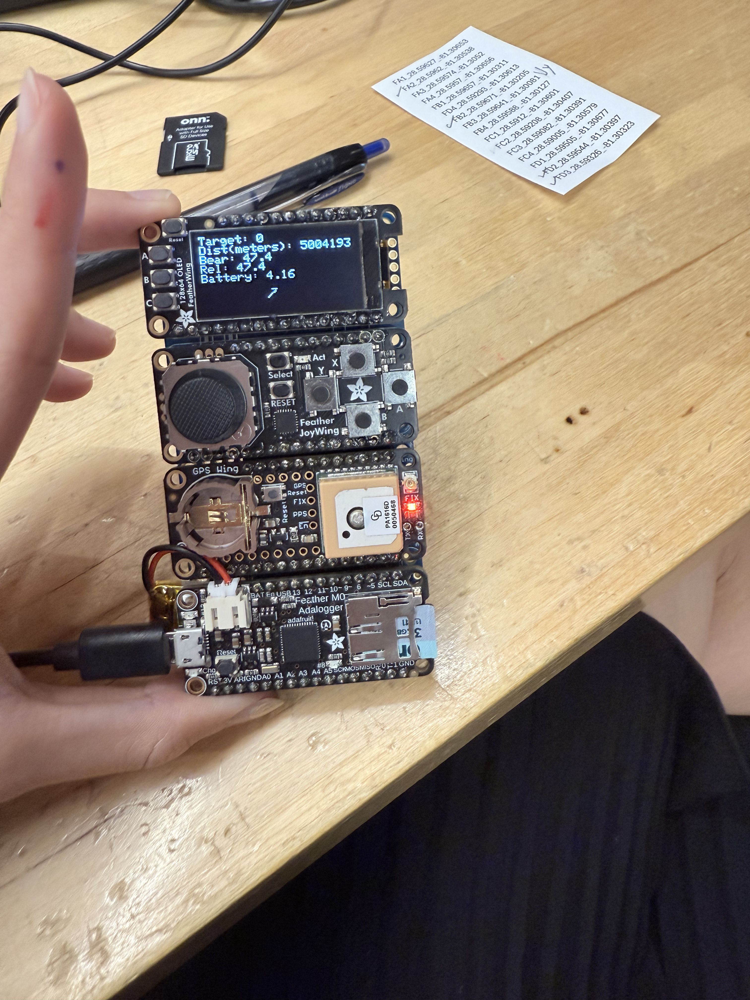
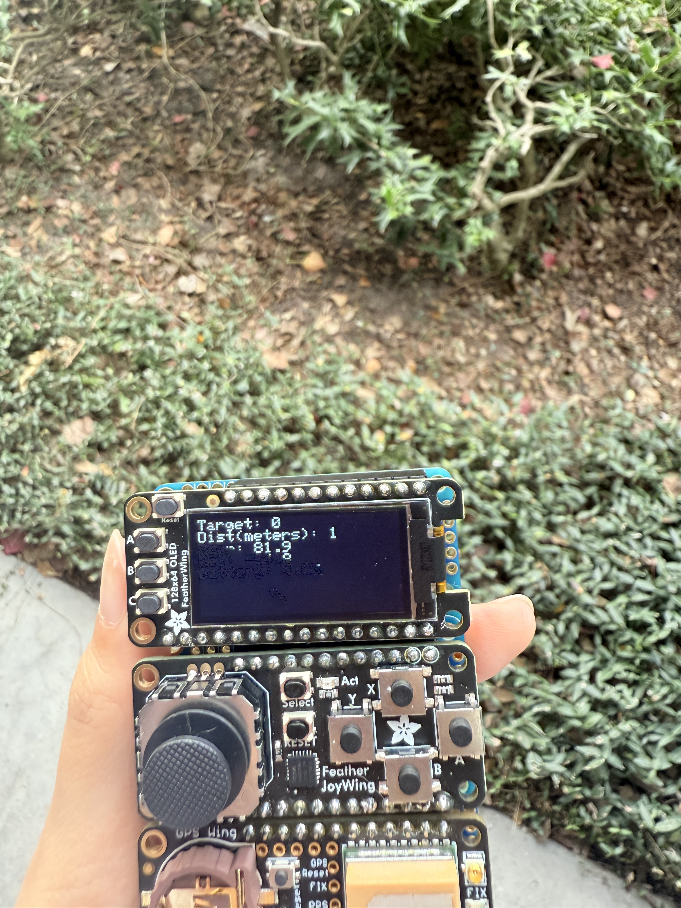
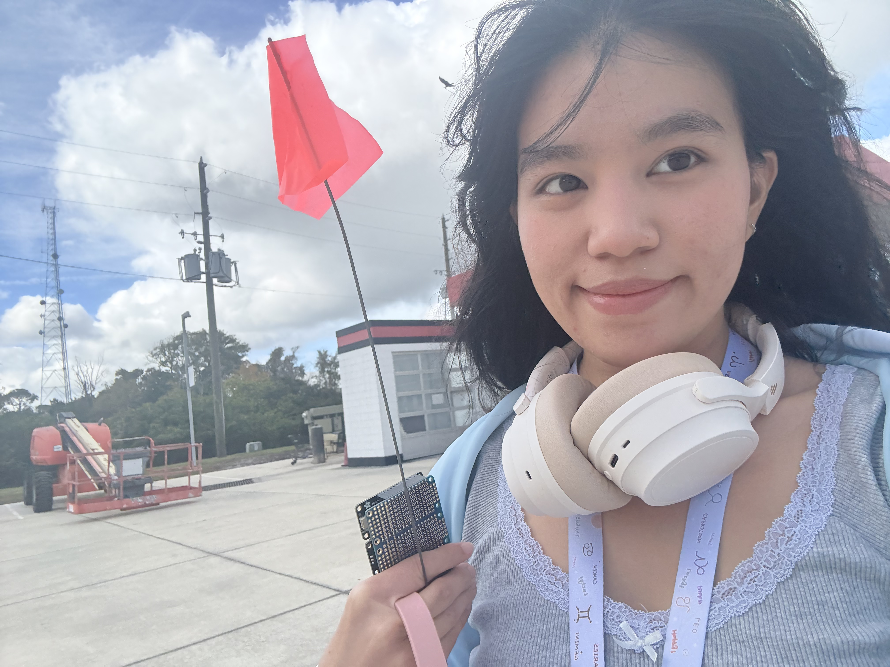

A handheld geocaching device built on the Adafruit Feather platform. It parses real-time GPRMC NMEA sentences from a GPS module, computes great-circle distance (in meters) and True North bearing to four target waypoints via the Haversine formula, and renders navigation telemetry and a dynamic steering pointer on an SH1107 OLED screen. It also tracks the coordinates and logs search runs directly onto an SD card.
/******************************************************************************
GeoCache Hunt Project (GeoCache.cpp)
This skeleton code is provided to guide the work to be done. You are not
required to follow this coding structure. You are free to implement your
project however you wish.
It is best to not use string class objects to do string manipulation on
embedded systems which have limited RAM memory, since string class objects
allocate from RAM heap and do not provide any indication if memory
allocation fails. Instead use functions that operate on character arrays
such as sprintf(), strtok(), strtod() or other char array functions.
The GPS provides latitude and longitude in degrees minutes format (DDDMM.MMMM).
You will need to convert it to Decimal Degrees format (DDD.DDDD).
*******************************************************************************
Following is the GPS Shield "GPRMC" Message Structure. The GPS device sends a
message once a second. When testing in the classroom with "GPS_ON 0"
This message is received
once a second. You must figure out how to parse the message to obtain the
parameters required for the GeoCache project. Additional information on the
GPS device and messaging can be found in the documents supplied in your resource
coordinates in the following GPRMC sample message, after convert to Decimal
Degrees (DDD.DDDDDD) as latitude(23.118757) longitude(120.274060). By the way,
this coordinate is GlobalTop Technology in Tiawan, who designed and manufactured
the GPS Chip.
"$GPRMC,064951.000,A,2307.1256,N,12016.4438,E,0.03,165.48,260406,3.05,W,A*2C\r\n"
$GPRMC, // GPRMC Message
064951.000, // utc time hhmmss.sss
A, // coordinate status A=data valid or V=data not valid
2307.1256, // Latitude 2307.1256 (degrees minutes format dddmm.mmmm) range[0.90]
N, // N/S Indicator N=north or S=south
12016.4438, // Longitude 12016.4438 (degrees minutes format dddmm.mmmm) range[0.180]
E, // E/W Indicator E=east or W=west
0.03, // Speed over ground knots
165.48, // Course over ground (decimal degrees format ddd.dd)
260406, // date ddmmyy
3.05, // Magnetic variation (decimal degrees format ddd.dd)
W, // E=east or W=west
A // Mode A=Autonomous D=differential E=Estimated
*2C // checksum
\r\n // return and newline
*******************************************************************************
Configuration settings.
These defines make it easy for you to enable/disable certain
code during the development and debugging cycle of this project.
The results below are calculated from above GPS GPRMC message
and the GEOLAT0/GEOLON0 tree as target. Your results should be exactly the
same or nearly identical within the two least significant digits.
Results of converting GPS LAT or LON string to a float:
LAT_2307.1256 = 2307.125488
LON_12016.4438 = 12016.443359
Results of executing the following functions:
degMin2DecDeg() LAT_2307.1256_N = 23.118757 decimal degrees
degMin2DecDeg() LON_12016.4438_E = 120.274055 decimal degrees
calcDistance() to GEOLAT0/GEOLON0 target = 45335760 feet
calcBearing() to GEOLAT0/GEOLON0 target = 22.999652 degrees
Results for adjusting for relative bearing towards tree = 217.519650 degrees
******************************************************************************/
#include <SD.h>
#include "wiring_private.h"
#include <Adafruit_seesaw.h>
#include <Adafruit_SH110X.h>
//targetNum
#define TARGET_NUM 4
#define DISTUNIT 6371000.0 // 3959.0 * 5280.0 FOR FEETS:
// compile flags
#define GPS_ON 1 // GPS messages classroom testing = 0, live outside = 1
#define LOG_ON 0 // Logging messages classroom testing = 1, live outside = 0
// Feather PINS for peripherals
#define SDC_CS 4 // Secure Digital Card SPI chip select
#define BAT_IN A7 // Battery analog pin
// joy BITS for buttons
#define BUT_RT (1 << 6)
#define BUT_DN (1 << 7)
#define BUT_LF (1 << 9)
#define BUT_UP (1 << 10)
#define BUT_SL (1 << 14)
#define BUT_MSK (BUT_RT | BUT_DN | BUT_LF | BUT_UP | BUT_SL)
#define GPS_BUFSIZ 96 // max size of GPS char buffer
// OLED PINS (not used)
// #define BUT_A 9
// #define BUT_B 6
// #define BUT_C 5
// GPS control messages
#define PMTK_AWAKE "$PMTK010,002*2D"
#define PMTK_STANDBY "$PMTK161,0*28"
#define PMTK_Q_RELEASE "$PMTK605*31"
#define PMTK_ENABLE_WAAS "$PMTK301,2*2E"
#define PMTK_ENABLE_SBAS "$PMTK313,1*2E"
#define PMTK_CMD_HOT_START "$PMTK101*32"
#define PMTK_CMD_WARM_START "$PMTK102*31"
#define PMTK_CMD_COLD_START "$PMTK103*30"
#define PMTK_CMD_FULL_COLD_START "$PMTK104*37"
#define PMTK_SET_BAUD_9600 "$PMTK251,9600*17"
#define PMTK_SET_BAUD_57600 "$PMTK251,57600*2C"
#define PMTK_SET_NMEA_UPDATE_1HZ "$PMTK220,1000*1F"
#define PMTK_SET_NMEA_UPDATE_5HZ "$PMTK220,200*2C"
#define PMTK_API_SET_FIX_CTL_1HZ "$PMTK300,1000,0,0,0,0*1C"
#define PMTK_API_SET_FIX_CTL_5HZ "$PMTK300,200,0,0,0,0*2F"
#define PMTK_SET_NMEA_OUTPUT_RMC "$PMTK314,0,1,0,0,0,0,0,0,0,0,0,0,0,0,0,0,0,0,0*29"
#define PMTK_SET_NMEA_OUTPUT_GGA "$PMTK314,0,0,0,1,0,0,0,0,0,0,0,0,0,0,0,0,0,0,0*29"
#define PMTK_SET_NMEA_OUTPUT_RMCGGA "$PMTK314,0,1,0,1,0,0,0,0,0,0,0,0,0,0,0,0,0,0,0*28"
#define PMTK_SET_NMEA_OUTPUT_OFF "$PMTK314,0,0,0,0,0,0,0,0,0,0,0,0,0,0,0,0,0,0,0*28"
/*****************************************************************
Following are example coordinates that can be used for testing.
Modify these to test your own coordinates on Fullsail campus
*****************************************************************/
// FS3B-116 large tree outside front door across driveway
#define GEOLAT0 28.5962
#define GEOLON0 -81.30538
// Null Island (Gulf of Giana)
#define GEOLAT1 28.59671
#define GEOLON1 -81.30205
// North Pole (any longitude works)
#define GEOLAT2 28.59544
#define GEOLON2 -81.30397
// South Pole (any longitude works)
#define GEOLAT3 28.59326
#define GEOLON3 -81.30323
// waypoint structure
typedef struct
{
float latitude;
float longitude;
} WAYPOINT;
/**************************/
/**** GLOBAL VARIABLES ****/
/**************************/
bool recording = false; // SDC is recording
bool acquired = false; // GPS acquired position
uint8_t target = 0; // GeoCache target number
float flat = 0.0; // current GPS latitude position
float flon = 0.0; // current GPS longitude position
float fcog = 0.0; // current course over ground
float fbrg = 0.0; // true north target bearing
float frel = 0.0; // relative bearing to target
float fdis = 0.0; // current distance to target
/************************/
/**** GLOBAL OBJECTS ****/
/************************/
WAYPOINT waypoint[] = {
GEOLAT0,
GEOLON0,
GEOLAT1,
GEOLON1,
GEOLAT2,
GEOLON2,
GEOLAT3,
GEOLON3,
};
File logFile;
Adafruit_seesaw joy;
Adafruit_SH1107 oled = Adafruit_SH1107(64, 128, &Wire);
/**************************************************
Convert Degrees Minutes (DDMM.MMMM) into Decimal Degrees (DDD.DDDD)
float degMin2DecDeg(char *ccor, char *cind)
Input:
ccor = char string pointer containing the GPRMC latitude or longitude DDDMM.MMMM coordinate
cind = char string pointer containing the GPRMC latitude(N/S) or longitude (E/W) indicator
Return:
Decimal degrees coordinate.
**************************************************/
float degMin2DecDeg(char* ccor, char* cind) {
float degrees = 0.0;
/*
TODO convert degrees minutes to decimal degrees
*/
//turn string into float
float ccorNum = atof(ccor);
//take the degrees part 1122.2222 -> 11
int degreesPart = (int)(ccorNum / 100);
//1122.2222 - 1100.0000 = 22.2222
float minutespart = ccorNum - (degreesPart*100);
//decimal degress = (minutespart/60.0) + degreesPart;
degrees = (minutespart/60.0) + degreesPart;
//if its south or west the number swap
if(*cind == 'S' || *cind == 'W') degrees = -degrees;
#if LOG_ON
Serial.print("degMin2DecDeg() returned: ");
Serial.println(degrees, 6);
#endif
return(degrees);
}
/**************************************************
Calculate Great Circle Distance between to coordinates using
Haversine formula.
float calcDistance(float flat1, float flon1, float flat2, float flon2)
EARTH_RADIUS_FEET = 3959.00 radius miles * 5280 feet per mile
Input:
flat1, flon1 = GPS latitude and longitude coordinate in decimal degrees
flat2, flon2 = Target latitude and longitude coordinate in decimal degrees
Return:
distance in feet (3959 earth radius in miles * 5280 feet per mile)
**************************************************/
void drawArrow(float angle) {
// OLED 64w x 128h (setRotation(1))
// Vẽ mũi tên ở góc phải dưới
int centerX = 54; // gần góc phải (64-10)
int centerY = 54; // gần đáy màn hình (64-10)
int arrowLength = 10; // chiều dài mũi tên
int arrowHeadLength = 4; // kích thước đầu mũi tên
// Clear previous arrow area
oled.fillRect(centerX - arrowLength - 2, centerY - arrowLength - 2,
arrowLength*2 + 4, arrowLength*2 + 4, SH110X_BLACK);
// Chuyển relative bearing sang radian
float angleRad = radians(angle - 90); // -90 vì 0 độ trỏ lên trên
int endX = centerX + arrowLength * cos(angleRad);
int endY = centerY + arrowLength * sin(angleRad);
// Vẽ thân mũi tên
oled.drawLine(centerX, centerY, endX, endY, SH110X_WHITE);
// Vẽ đầu mũi tên
float leftAngle = angleRad + radians(150);
float rightAngle = angleRad + radians(210);
int leftX = endX + arrowHeadLength * cos(leftAngle);
int leftY = endY + arrowHeadLength * sin(leftAngle);
int rightX = endX + arrowHeadLength * cos(rightAngle);
int rightY = endY + arrowHeadLength * sin(rightAngle);
oled.drawLine(endX, endY, leftX, leftY, SH110X_WHITE);
oled.drawLine(endX, endY, rightX, rightY, SH110X_WHITE);
}
float calcDistance(float flat1, float flon1, float flat2, float flon2) {
float distance = 0.0;
/*
TODO calculated distance to target
*/
//change decimal degrees into randians
float lat1 = radians(flat1);
float lon1 = radians(flon1);
float lat2 = radians(flat2);
float lon2 = radians(flon2);
float dlat = lat2 - lat1;
float dlon = lon2 - lon1;
float a = sin(dlat/2) * sin(dlat/2) +
cos(lat1) * cos(lat2) * sin(dlon/2) * sin(dlon/2);
float c = 2 * atan2(sqrt(a), sqrt(1 - a));
distance = DISTUNIT * c;
#if LOG_ON
Serial.print("calcDistance() returned: ");
Serial.println(distance, 6);
#endif
return (distance);
}
/******************************************************************************
Calculate Great Circle Bearing between two coordinates
float calcBearing(float flat1, float flon1, float flat2, float flon2)
Input:
flat1, flon1 = gps latitude and longitude coordinate in decimal degrees
flat2, flon2 = target latitude and longitude coordinate in decimal degrees
Return:
angle in decimal degrees from magnetic north
NOTE: atan2() returns range of -pi/2 to +pi/2)
******************************************************************************/
/**************************************************
Calculate Great Circle Bearing between two coordinates
float calcBearing(float flat1, float flon1, float flat2, float flon2)
Input:
flat1, flon1 = gps latitude and longitude coordinate in decimal degrees
flat2, flon2 = target latitude and longitude coordinate in decimal degrees
Return:
angle in decimal degrees from magnetic north
NOTE: atan2() returns range of -pi/2 to +pi/2)
**************************************************/
float calcBearing(float flat1, float flon1, float flat2, float flon2) {
float bearing = 0.0;
/*
TODO calculate bearing to target
*/
float lat1 = radians(flat1);
float lon1 = radians(flon1);
float lat2 = radians(flat2);
float lon2 = radians(flon2);
float dLon = lon2 - lon1;
float y = sin(dLon) * cos(lat2);
float x = cos(lat1)*sin(lat2) - sin(lat1)*cos(lat2)*cos(dLon);
bearing = degrees(atan2(y, x));
if (bearing < 0) bearing += 360.0;
#if LOG_ON
Serial.print("calcBearing() returned: ");
Serial.println(bearing, 6);
#endif
return (bearing);
}
#if GPS_ON
/*
Get valid GPS message.
char* getGpsMessage(void)
Side affects:
Message is placed in local static char buffer.
Input:
none
Return:
char* = null char pointer if message not received
char* = pointer to static char buffer if message received
*/
char* getGpsMessage(void) {
bool rv = false;
static uint8_t x = 0;
static char cstr[GPS_BUFSIZ];
// get nmea string
while (Serial1.peek() != -1) {
// reset or bound cstr
if (x == 0) memset(cstr, 0, sizeof(cstr));
else if (x >= (GPS_BUFSIZ - 1)) x = 0;
// read next char
cstr[x] = Serial1.read();
// looking for "$GPRMC", toss out undesired messages
if ((x >= 3) && (cstr[0] != '$') && (cstr[3] != 'R')) {
x = 0;
break;
}
// if end of message received (sequence is \r\n)
if (cstr[x] == '\n') {
// nul terminate char buffer (before \r\n)
cstr[x - 1] = 0;
// if checksum not found
if (cstr[x - 4] != '*') {
x = 0;
break;
}
// convert hex checksum to binary
uint8_t isum = strtol(&cstr[x - 3], NULL, 16);
// reverse checksum
for (uint8_t y = 1; y < (x - 4); y++) isum ^= cstr[y];
// if invalid checksum
if (isum != 0) {
x = 0;
break;
}
// else valid message
rv = true;
x = 0;
break;
}
// increment buffer position
else
x++;
// software serial must breath, else miss incoming characters
delay(1);
}
if (rv) return (cstr);
else return (nullptr);
}
#else
/*
Get simulated GPS message provided once a second.
This is the same message and coordinates as described at the top of this
file.
NOTE: DO NOT CHANGE THIS CODE !!!
char* getGpsMessage(void)
Side affects:
Message is place in local static char buffer
Input:
none
Return:
char* = null char pointer if message not received
char* = pointer to static char buffer if message received
*/
char* getGpsMessage(void) {
static char cstr[GPS_BUFSIZ];
static uint32_t timestamp = 0;
uint32_t timenow = millis();
// provide message every second
if (timestamp >= timenow) return (nullptr);
String sstr = "$GPRMC,064951.000,A,2307.1256,N,12016.4438,E,0.03,165.48,260406,3.05,W,A*2C";
memcpy(cstr, sstr.c_str(), sstr.length());
timestamp = timenow + 1000;
return (cstr);
}
// Draw an arrow pointing based on relative bearing
#endif
float getBatteryVoltage(void) {
float vbat = analogRead(BAT_IN);
vbat *= 2; // normalize - input is divided by 2 using restor divider.
vbat *= 3.3; // multiply by analog input reference voltage of 3.3v.
vbat /= 1024; // convert to actual battery voltage (10 bit analog input)
return (vbat);
}
void setup(void) {
// delay till terminal opened
Serial.begin(115200);
// wait upto 5 seconds to open serial terminal
while (!Serial && (millis() < 5000))
// initialize status LED=OFF
pinMode(LED_BUILTIN, OUTPUT);
digitalWrite(LED_BUILTIN, LOW);
// initialize oled dispaly
while (oled.begin(0x3C, true) == false) {
Serial.println("oled.begin() failed");
delay(1000);
}
/********************************
oled is 128w x 64h
Chars initialized to 6w x 8h
Max 21 chars per line
Max 8 lines per display
********************************/
oled.clearDisplay();
oled.setTextSize(1);
oled.setRotation(1);
oled.setTextColor(SH110X_WHITE);
oled.setCursor(0, 0);
oled.println("GeoCache Hello World!");
oled.display();
// initialize joy board
while (joy.begin() == false) {
Serial.println("joy.begin() failed");
delay(1000);
}
// set joy pin modes/interrupts
joy.pinModeBulk(BUT_MSK, INPUT_PULLUP);
// TODO - initialize Secure Digital Card and open "MyMap.txt" file for writing
// Be sure to specify the SD chip select pin (see #defines at top of this file)
SD.begin(SDC_CS);
logFile = SD.open("MyMap.txt", FILE_WRITE);
#if GPS_ON
// initilaze gps serial baud rate
Serial1.begin(9600);
// initialize gps message type/rate
Serial1.println(PMTK_SET_NMEA_UPDATE_1HZ);
Serial1.println(PMTK_API_SET_FIX_CTL_1HZ);
Serial1.println(PMTK_SET_NMEA_OUTPUT_RMC);
#endif
Serial.println("setup() complete");
}
void loop(void)
{
// get GPS message
char* cstr = getGpsMessage();
// if valid message
if (cstr) {
// print the GPRMC message
Serial.println(cstr);
// TODO - Check button for incrementing target index 0..3
uint32_t b = joy.digitalReadBulk(BUT_MSK);
if (!(b & BUT_UP))
{
target = (target + 1) % 4;
delay(250);
}
// TODO - Parse 5 parameters latitude, longitude, and hemisphere indicators, and course over ground from GPS message
char *tok = strtok(cstr, ",");
int idx = 0;
char *latStr = 0, *ns = 0, *lonStr = 0, *ew = 0, *cogStr = 0;
while (tok)
{
if (idx == 3) latStr = tok;
if (idx == 4) ns = tok;
if (idx == 5) lonStr = tok;
if (idx == 6) ew = tok;
if (idx == 8) cogStr = tok;
tok = strtok(NULL, ",");
idx++;
}
// TODO - Call degMin2DecDeg() convert latitude deg/min to dec/deg
flat = degMin2DecDeg(latStr, ns);
flon = degMin2DecDeg(lonStr, ew);
fcog = atof(cogStr);
// TODO - Call calcDistance() calculate distance to target
fdis = calcDistance(flat, flon, waypoint[target].latitude, waypoint[target].longitude);
// TODO - Call calcBearing() calculate bearing to target
fbrg = calcBearing(flat, flon, waypoint[target].latitude, waypoint[target].longitude);
// TODO - Calculate relative bearing within range >= 0 and < 360
frel = fbrg - fcog;
if (frel > 180) frel -= 360;
if (frel < -180) frel += 360;
#if LOG_ON
Serial.print("Relative Bearing: ");
Serial.println(frel);
#endif
// TODO write required data to SecureDigital then execute flush()
if (logFile)
{
logFile.print(flon, 6);
logFile.print(",");
logFile.print(flat, 6);
logFile.print(",");
logFile.print(fbrg, 0);
logFile.print(".");
logFile.println((int)fdis);
logFile.flush();
}
// TODO - Display
oled.clearDisplay();
oled.setCursor(0, 0);
oled.print("Target: "); oled.println(target);
oled.print("Dist(meters): "); oled.println((int)fdis);
oled.print("Bear: "); oled.println(fbrg, 1);
oled.print("Rel: "); oled.println(frel, 1);
oled.print("Battery: "); oled.println(getBatteryVoltage());
drawArrow(frel);
oled.display();
}
// TODO - toggle LED_BUILTIN once a second.
static uint32_t lastTime = 0;
if (millis() - lastTime >= 1000) {
digitalWrite(LED_BUILTIN, !digitalRead(LED_BUILTIN));
lastTime = millis();
}
}